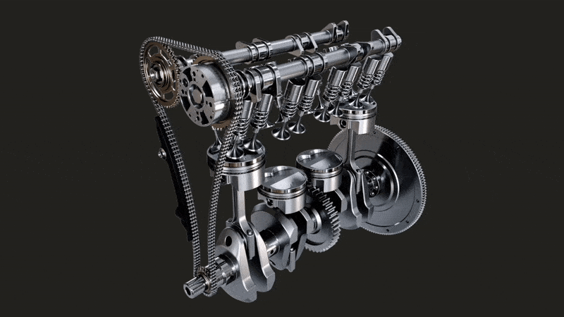
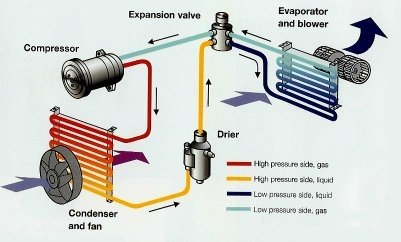

16 Object Oriented Programming
Object Oriented Programming
- Lets assume we want to learn car driving
- Know everything: Understand how car engine works, ac works  
- Or will you try to operate car using the abstractions like steering, dashboard, clutch, accelarator etc.
- Steering hides the complexity of rotating tyres and gives you simple abstracted interface.
- When we humans learn to use objects we use the abstracted interfaces.
- When we try to design program’s/applications why don’t we follow this approach?
- This thought process has led to object-oriented programming.
- Generally anything or everything is an object.
- Every object will have contents (What it has or what it is made of) and characteristics (What it can do).
- Lets take television as an example:
contents: screen hdmi ports usb ports motherboard characteristics: playmovies connect to satellite channels - Lets take car as an example:
contents: engine wheels dashboard characteristics: start_the_engine commute stop_the_engine - Lets take bank account as an example:
contents: account holders name account id address balance characteristics: deposit_amount withdraw_amount transfer_amount pay_bills - When we work on object-oriented programming we call contents as members and characteristics as methods.
- Members represent data and methods represent behaviors.
- Generally when we think of system we will have multiple objects.
- The following are major relations
- Inheritance:
- What does it mean Captian America is a soldier or Stark is an engineer or car is a vehicle.
- In this relation we have two objects parent object (soldier/engineer/Vehicle) and child objects (Captian America, Stark, car) which have same contents or capabilities/behaviors as a parent.
- Inheritance in simple is a relation that can be expressed as is a relationship.
- Composition:
- What does it mean by Bus has a driver or wall has a clock or laptop has a webcam.
- In one object other object is composed/present.
- When any relationship b/w two objects can be expressed as has a, it is Composition.
- Inheritance:
- The design time entity of object is called as class. We use class to create multiple objects.
- Classes are design time entities and Objects are runtime entities.
Terms
- Object Oriented Analysis (OOA):
- We will look into real world problem and analyze the problem and write requirements with objects into consideration.
- Object Oriented Design (OOD):
- From the requirements we create a design (UML) with objects and their relationships.
- Object-Oriented Programming (OOPS):
- Implementation of the design created by OOD in some object-oriented language like C#, Java, Python etc…